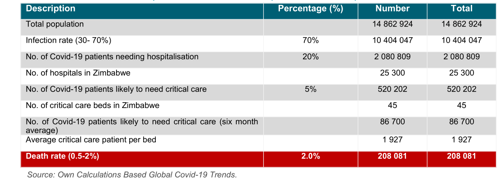

We estimate here, at a high and rudimentary level, the potential impact of Covid19 to the Zimbabwean population and medical facilities. We adopted the assumptions such as infection rates, percentage of people needing hospitalisation,
and percentage of people needing critical care from the experiences of other countries such as China, USA, UK, Italy and South Africa. We forecasted two main estimates, the best case and worst-case scenarios.
Forecast of Potential Impact of Covid-19 in Zimbabwe (Best Case Scenario)
The Zimbabwean population is currently estimated to be around 14.9 million people. In our best-case scenarios, it is assumed that around 30% of the Zimbabwe population would be infected. Other European countries and South Africa forecasted
an infection rate of 60-70%. However, given that the economy of Zimbabwe is not as globalised as that of South Africa and EU countries and the fact that the world is literally on lockdown, the infection rate could be lower. Secondly,
the country has already declared a lockdown with only 7 confirmed cases. However, it’s important to note that even with this conservative estimate:
Around 4.5 million people (30%) are projected to be infected by the corona virus.
Of this 4.5 million, 668 832 (15%) might need hospitalisation. Current estimates indicated that Zimbabwe has around 25 300 normal hospital beds.
Of the confirmed cases, it is estimated that (222 944) 5% would need critical care. Zimbabwe is estimated to have a total of 100 critical care beds, of these beds around 45 have been identified for Covid-19 patents. It’s not clear
how many more Covid-19 patents beds are being made available through the current renovations of some facilities. Based on the best-case scenario of 100 Covid beds, it’s estimated that only one 1 out of 372 critical patients would
get a admitted in ICU. This is might lead to a situation where doctors have to make a choice on who to give a critical care bed. Unfortunately, this has been happening in Italy, as the system got overwhelmed, leading to massive
deaths.
On average, around 0.5-2% of confirmed cases die. Using the best-case scenario, the number of Covid-19 related deaths is estimated at 22 294 (0.5%).
Forecast of Potential Impact of Covid-19 in Zimbabwe (Worst Case Scenario)

The worst-case scenario assumes that 70% of the Zimbabwe population would be infected. Based on this, it is estimated that
More than 10 million people (70%) will be infected by the corona virus.
Around 2 million people (20%) will need hospitalisation. This is against a total bed count of 25 300.
Around 520 000 people (5%) would need critical care. This is against a critical care total bed count of 45. Even if we spread the number of patients over a 6 months period, a ratio of 1:1 927 clearly indicates that the country would
not have capacity.
Mitigation
Even with best prevention efforts, a highly infectious virus like SARS-COV-2 will infect some and the country has to be ready to mitigate impact. As per the WHO guidelines, and given Zimbabwe’s current situations, the following
have to be prioritised
Identify essential services that will be prioritized in their efforts to maintain continuity of service delivery and make strategic shifts to ensure that increasingly limited resources provide maximum benefit for the population.
Comply with the highest standard in precautions, especially in hygiene practices, and the provision of adequate supplies including personal protective equipment.
Ensure robust planning and coordinated actions between governments and health facilities and their managers.
As part of mitigation, the Government of Zimbabwe would need support in strengthening the following:
Facilities of treating known cases to prevent complications
Scaling up screening to allow targeting of prevention efforts to hotspot areas and activities,
Improve the effectiveness of lockdown, social distancing and other prevention messages so that the country can quickly begin to “flatten the curve". This implies trying as much as possible to delay spread to allow health system
to cope with cases as they arise.
Managing the Covid-19 Information and Communication
What we have learnt from other countries is that wrong information can cause a lot of harm. It’s critical the Government agencies, the entire healthy system and the media are spreading accurate and timely information. If this is
not done properly social media might dominate, leading to the spread of inaccurate or ‘fake news’. Therefore, information management and dissemination are key to the fight against Covid-19.